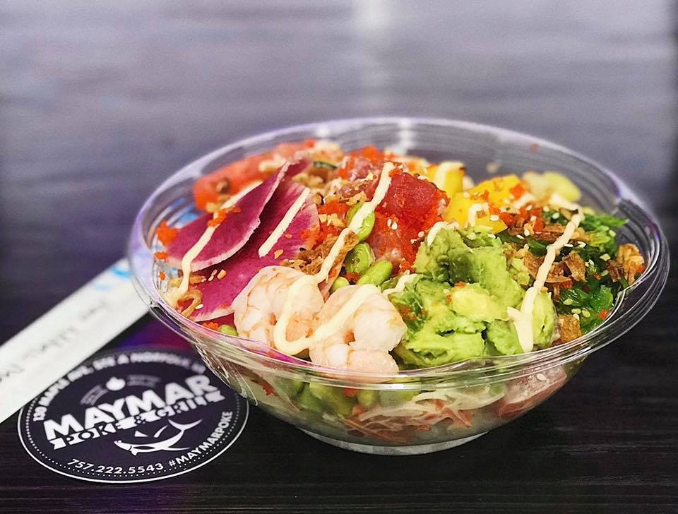
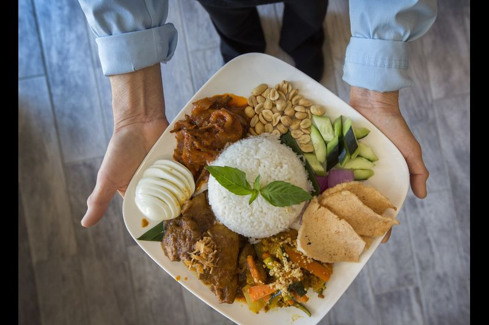
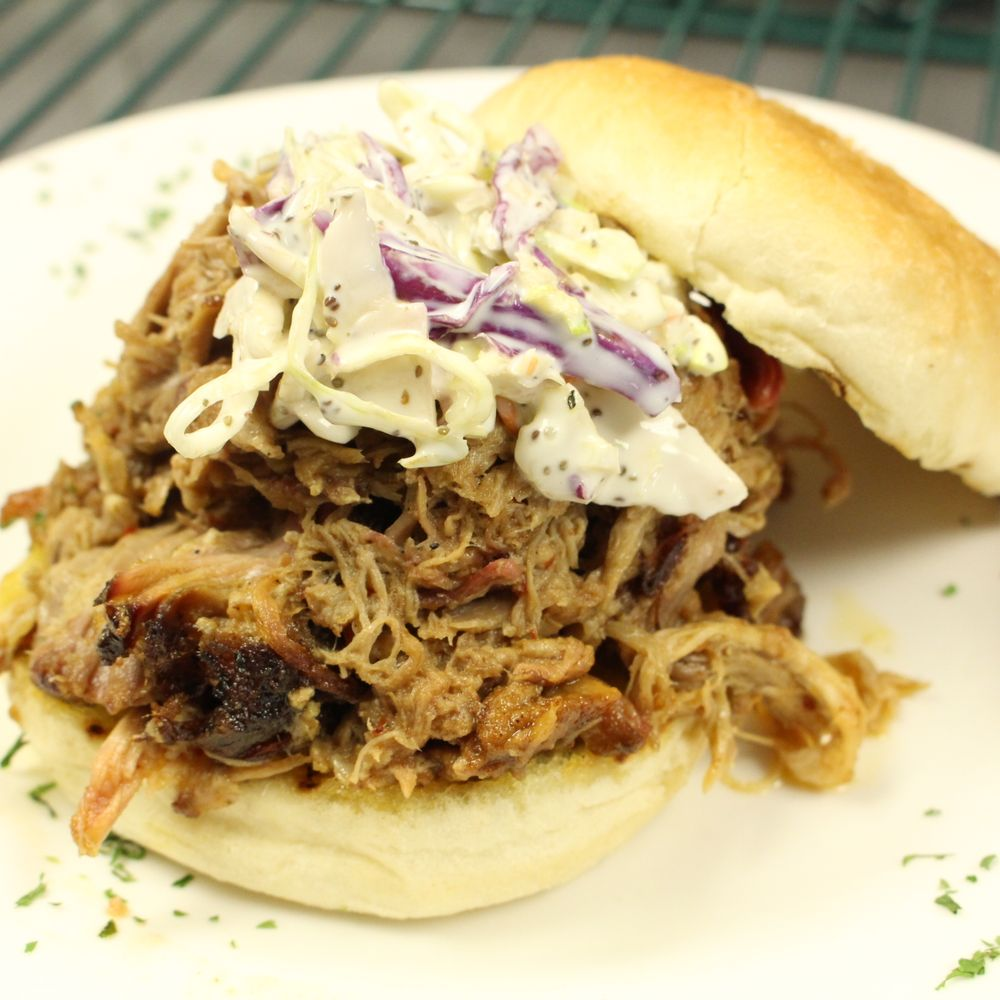
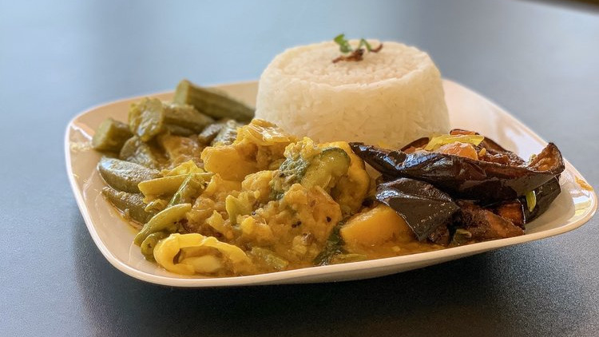
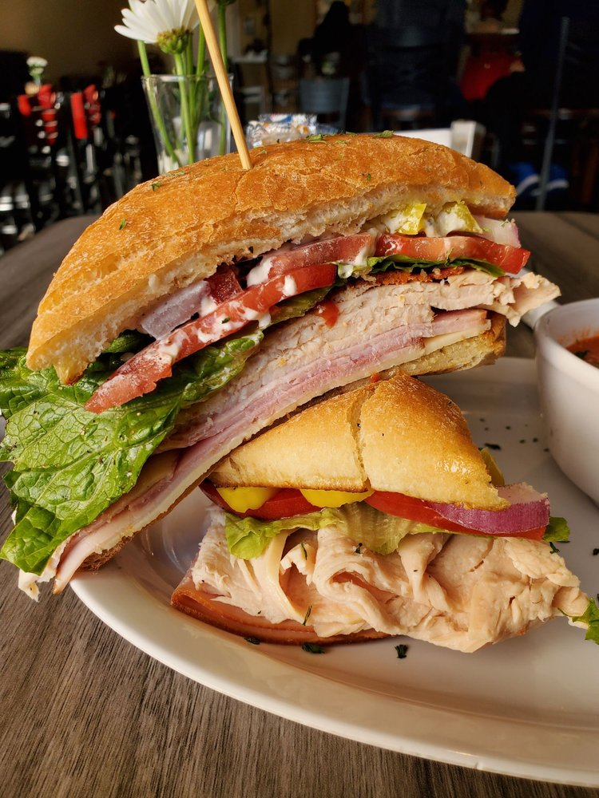
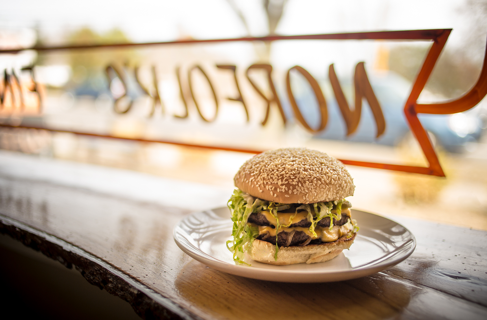
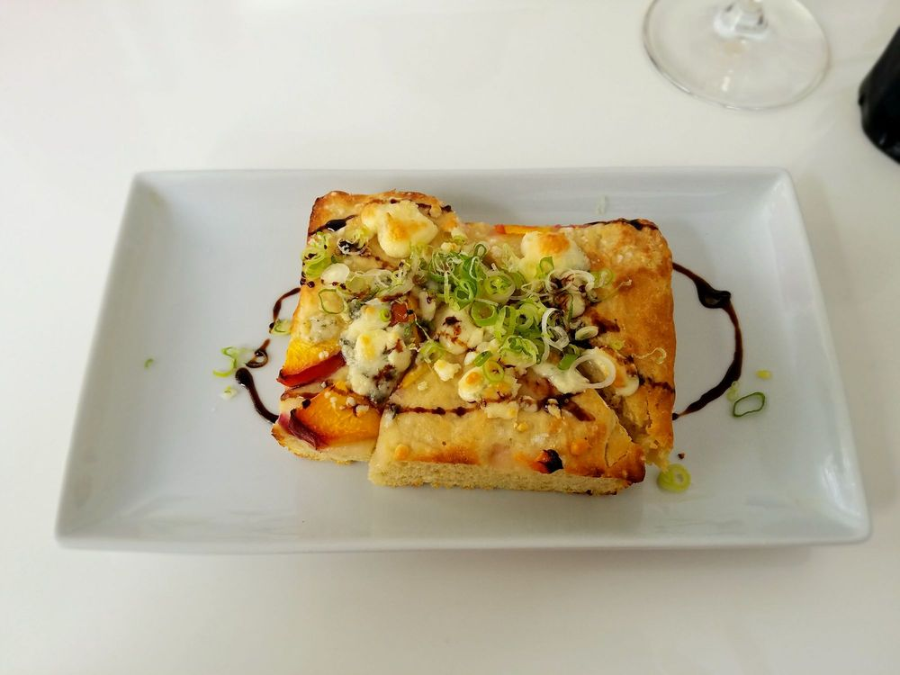
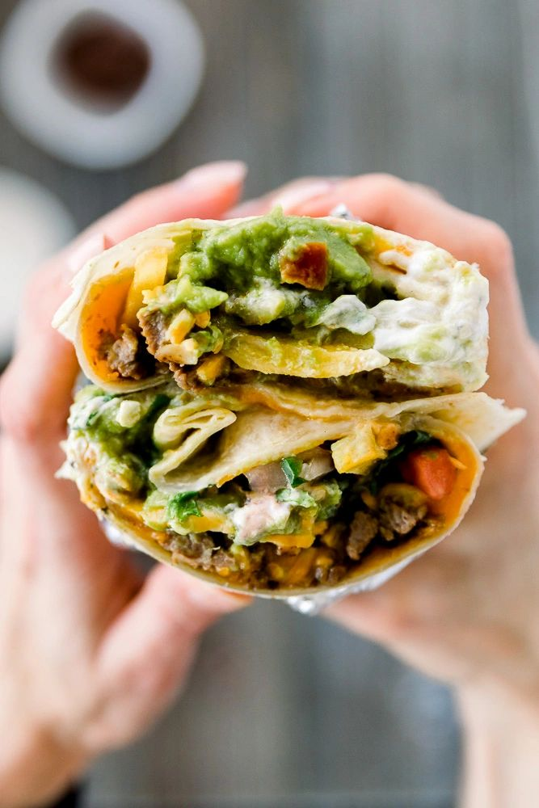
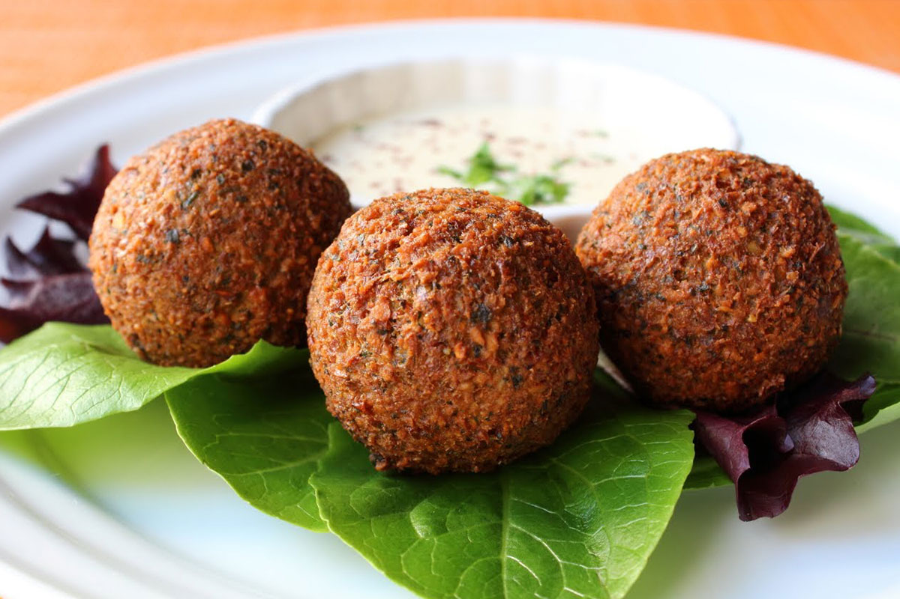
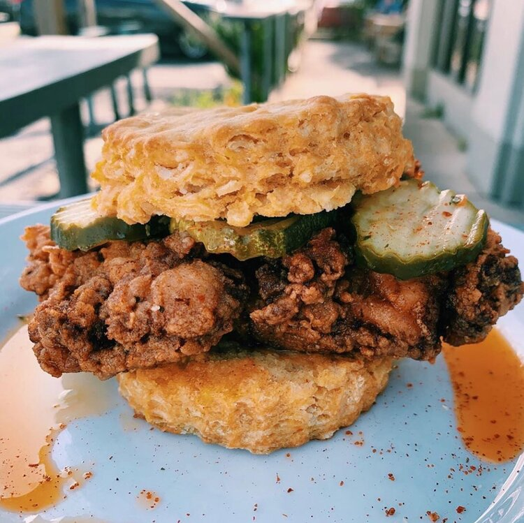

Maymar Poke & Grill - Serves traditional Filipino dishes with a Turo-Turo style setup and poké bowls that you can customize to your liking.

Penang Town - Serves traditional Malaysian cuisine with a modern touch using only the highest quality of fresh ingredients.

Sam's Texas Sub Shop - A local sandwich shop that doesn't skimp on portions.

Bangladeshi Bistro - Bringing a taste of Bangladesh to Norfolk, they are owned and operated by a Muslim family who serves all halal food.

Happy Cafe - Specializes in gourmet sandwiches, smoothies, bread pudding, and graduate donuts.

LeGrand Kitchen - Presents an ecclectic spin on American cuisine. Offers multiple gluten free options.

Chartreuse Bistro - A husband & wife owned and operated organic farm-to-table bistro located in the historic district in downtown Norfolk.

A World of Good - A small family owned restaurant that brings a whole new take on street food and casual dining. The cuisine focuses on the amazing street foods found in four major regions of the world: Latin America, North America, Southeast Asia, and the Mediterranean.

Mr. Shawarma - Owned by Avi, an Israeli immigrant, Mr. Shawarma serves authentic Middle Eastern street food using only the highest quality ingredients, including spices direct from Israel and halal meats.

Handsome Biscuit - Sweet Potato Biscuit Sandwiches. "We like to make things taste good, but we are super small so our menu can only be so big. People love our fried chicken, and some go crazy for our lemon bars. But it might be the house soda which everyone loves. We got some ideas still locked up in the trunk!"

Virginia Beach
Williamsburg
Yorktown
Covid-19 Restrictions
Restaurant and Beverage Services
scope: Restaurants, dining establishments, food courts, breweries, cideries, mobile units (food trucks), distilleries, wineries, social clubs serving food or beverage, and tasting rooms.
phase 3: Establishments must either implement the following mandatory requirements or close.
Mandatory Requirements:
Businesses must strictly adhere to the physical distancing guidelines, enhanced cleaning and disinfection practices, and enhanced workplace safety practices provided in the “Guidelines for All Business Sectors” document. Virginia Department of Health and Virginia Department of Agriculture and Consumer Services regulated facilities must continue to follow requirements related to prohibiting sick employees in the workplace, strict handwashing practices, and procedures and practices to clean and sanitize surfaces.
During Phase 3, businesses should continue to offer takeout and delivery options. If businesses choose to open to dine-in customers, they may do so in indoor and outdoor spaces and must adhere to the following additional requirements for service:
No alcoholic beverage shall be sold, consumed, or possessed on premises between the hours of 12:00 midnight and 5:00 a.m. in any restaurant, dining establishment, food court, brewery, microbrewery, distillery, winery, or tasting room. Alcoholic beverages may continue to be sold via delivery or take-out between the hours of 12:00 midnight and 5:00 a.m.
Closure of all dining and congregation areas in restaurants, dining establishments, food courts, breweries, microbreweries, distilleries, wineries, and tasting rooms between the hours of 12:00 midnight and 5:00 a.m. Restaurants, dining establishments, food courts, breweries, microbreweries, distilleries, wineries, and tasting rooms may continue to offer delivery and take-out services between the hours of 12:00 midnight and 5:00 a.m.
No one with a fever or symptoms of COVID-19, a positive diagnostic test for the virus that causes COVID-19 in the prior 10 days, or known exposure to a COVID-19 case in the prior 14 days, is permitted in the establishment.
Patrons must wear masks over their nose and mouth, except while eating and drinking.
All parties must be separated by at least six feet, including in the bar area. Spacing must also allow for physical distancing from areas outside of the facility’s control (i.e., provide physical distancing from persons on public sidewalks).
All private bookings are limited to 10 people indoors and 25 people outdoors.
All parties, whether seated together or across multiple tables, must be limited to no more than 10 patrons indoors and no more than 25 patrons outdoors.
Bar seats and congregating areas of restaurants must be closed to patrons except for through-traffic. Non-bar seating in the bar area (i.e., tables or counter seats that do not line up to a bar or food service area) may be used for customer seating as long as a minimum of six feet is provided between parties at tables.
Do not seat multiple parties at any one table unless marked with six foot divisions (such as with tape).
Patrons may wait for takeout or for seated dining in the lobby area, but they must maintain six feet of physical distance between parties.